<<2016年6月 | トップページ | 2016年8月>>
2016年7月
夏が来た！［辻晴仁］
おはこんばんちは！
つじはるとです (^^)/
夏が来た！
海だ！ しぜんだ！！ 生きものだ！！！
ぼくは、毎年夏が来ると、長崎のいなかにある
おじいちゃんとおばあちゃんの家に行って、
大しぜんの中で、思いっっっきり遊びます (^○^)
長崎の海はとってもきれい。
水がすきとおっていて、
海のそこのすなまで見えるほどです。
イカの赤ちゃんがならんで泳いでいて、
エイッとあみですくったつもりが、
はかれたスミをすくっていたり。。
ぜったいすくえたと思ったんだけどなあ。
生きものがたくさんいて、楽しかったな～
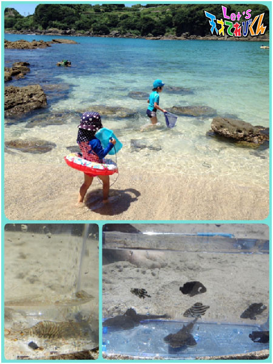
↑ こんなにたくさんのしゅるいの魚がいたよ。エビもいたよ。
そして、やっぱり、夏といえば、虫でしょう (^_-)-☆
去年は、おじいちゃんの家の近くの林で、
すごく大きなノコギリクワガタを見つけました。
めっちゃかっこよかったな～
よーし！！今年の夏も、海でいっぱい遊んで、
かっこいい虫もたくさん見つけるぞ！！！
楽しみだーーー !(^^)!
あ、あと夏といえばもう１つ、
それは～～～
アイス！！！
ぼくはアイスが大大大好きなんです♪
ソフトクリーム、かき氷、イタリアンジェラート、、
夏はアイスがおいしいからうれしいな。
今年の夏も、
いろんなアイスをいっぱい食べようっと。
まずは、夏まつりのかき氷！！！
たっのしみだなあ～ (#^^#)
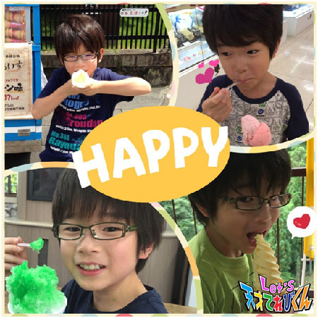
みんなも思いっきり夏を楽しんでね (^^♪
投稿者:辻晴仁 | 投稿時間:18時45分 | カテゴリ：てれび戦士 | 固定リンク
夏が来た！［瀧澤翼］
こんにちは！
いや～暑い（ーー；）
でも、夏は学校で体育の時間に水泳があるのでうれしい瀧澤翼です！
さぁ、今回のテーマは「夏が来た！」ですね。
最近ひそかに話題になっている
千葉県の『 農溝（ のうみぞ ）の滝 』に行ってきました！！
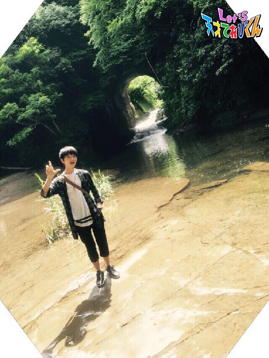
「 家族で行ってみたいね！ 」って話していたので
お父さんがドライブに連れてってくれました！
すごく幻想的でなにかすごいパワーを感じました！
運が良ければ、太陽から差し込む光が
下の水に反射してハートの形になると言われています！
見てみたいなぁ～！！
でもいい思い出ができました！
と、いうわけで僕の夏は「 自然 」です！
今年の夏は自然に触れたり、感じたりしたいです！
自然の不思議や大切さなど、魅力をどんどん知っていきたいです。
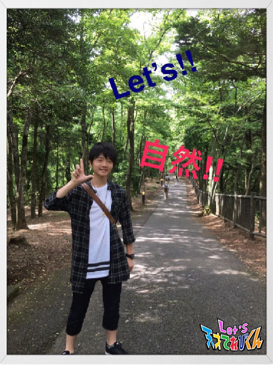
夏休みの自由研究はこれで決まり（＾∇＾）
では、また今度！
Let's nature！！
投稿者:瀧澤翼 | 投稿時間:18時54分 | カテゴリ：てれび戦士 | 固定リンク
夏が来た！［柿澤仁誠］
こんにちは (＾o＾)/ 夏本番になりました！
小学校の１学期最後の給食で
「 アイス 」が出ました！！！
暑いときに食べるアイスはサイコーー☆
学校で食べるアイスは
もっとサイコーーーーー！！！でした。(^○^〃)
夏といえば！
夏休み！
海！
すいか！
プール！
花火！
カブトムシの世話！
おまつり！
いろいろあるけど、１番楽しみにしているのは、
ある「 島 」の海に行くことです！
今から楽しみです。
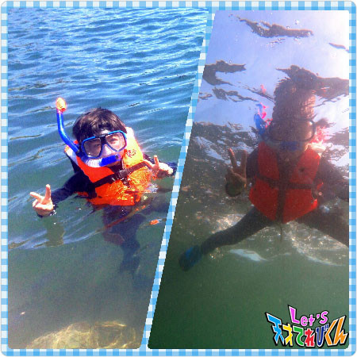
この写真は去年、海に行ったときにとりました。
このときは魚のほかに
タコや、ウミウシなどたくさんの生きものに会えました！
海はキケンもあるので、
暑いけどライフジャケットを着て
ケガと日やけに気をつけてます！
みなさんも海であそぶときは気をつけてください (＾人＾)
海にいく前に宿題を終わらせないと (゜ロ゜!!)
今年こそはバッチリ終わらせて
気持ちよく海に行きたいです ☆
ではまた (^o^)／~~
投稿者:柿澤仁誠 | 投稿時間:18時45分 | カテゴリ：てれび戦士 | 固定リンク
夏が来た！［桐畑カレン］
こんにちは。
カレンです (*^^*)
毎日暑いですね～。
みなさん、水分をたくさんとって熱中症にならないようにしてくださいね。
先日、ずーっとずーっと前から楽しみにしていた
ミュージカルをみに行ってきました。
１つの舞台の上でいろんな場面にかわるミュージカル。
歌とダンスで私を素敵な場所に連れていってくれました♪
楽しかったな (^^)
ちょうど学校でも、ミュージカル鑑賞、オーケストラ鑑賞に行ったんです。
♪芸術の夏♪
今年の夏は芸術から始まりました。
芸術から始まる夏・・・なんかかっこいいですね (^^)
さて。
夏はこれからが本番。
今年はどんなふうに過ごそうかな (’-’*)♪
というわけで、こんなものを作ってみました (^ー^)
じゃん！
☆ カレンの夏休みマニフェスト ☆
★ 夏休みの宿題は超スピードで終わらせるぞ ★
私の敵はいつも最後まで残ってしまう『 読書感想文 』。
今年こそは７月中に書きたいな～。
書けるかな～。
うん、書ける。書ける！
と、自分に言い聞かせて書きたいと思います (^^)/
★ お料理を作るお手伝いをするよ ★
いつも食べるのみ！
お母さんが作っているご飯に
「 おいしくなーれ☆ 」
と魔法をかけるのみ！
だったので、少しお料理のお手伝いをしてみようと思います。
マイ包丁も持っているのです・・・かわいいエプロンも持っているのです・・・
でもあまり使われていないのです・・・(-_-;)
よし、がんばろう (^^)/
★ いろいろ楽しむぞ ★
楽しい予定がちょこちょこ入ってきています (^w^)
長いようであっという間に終わってしまう夏休み。
めいっぱい楽しみたいです (^^)/
カレンの夏休みマニフェスト。
どれだけ実行できるかな～。
ふふふ♪
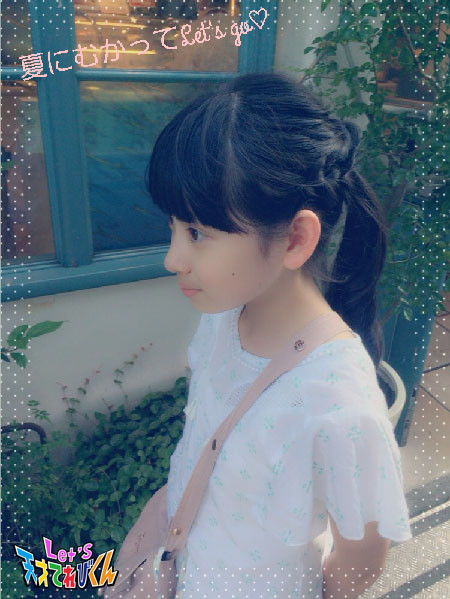
投稿者:桐畑カレン | 投稿時間:18時45分 | カテゴリ：てれび戦士 | 固定リンク
夏が来た！［久保みのり］
こんにちは ( ´ ▽ ` )ﾉ
みのりです！！
たっのしい夏休みがはじまりました ☆
前回のブログで、
夏を元気にすごせるように梅ジュースのことを書いたけど、
もう１つ私が元気モリモリになるアイテムがあります！！
それは、、、
「 ギョウザ 」です (⌒▽⌒)
外はかりっと中はじゅわっ！！
そうぞうするだけでヨダレがでてきます。
お店で食べるのもおいしいけど、
おうちで作るのも楽しくて大好きです^ ^
弟と一緒に120こ作ったんだよ～。
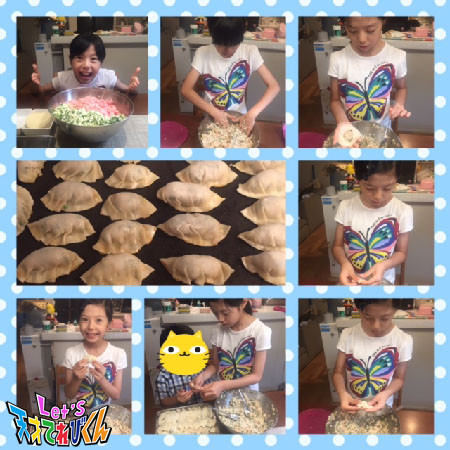
今回のテーマは「 夏が来た！ 」
う、うれしい～っっっ！！
なにしよっかなぁ。
まずは大好きなプールにとびこんで、
それからバーベキューもしたい！
カブトムシを探しに行きたいし、
ドラゴンズの応えんにも行きたい！！
トマトの丸かじりもしたいなぁ。
でもその前に宿題もけっこうあるからな T_T
８月の終わりにこまらないように、
あと回しにしないで先にやらなくちゃ！！
４年生になって、社会の授業で都道府県について勉強しました。
夏休みの自由研究のか題は、どこか１つの都道府県についてまとめること。
私はどこにするかもう決めました！
こないだ、どちゃもんのだんきちと仲よくなれたから、
だんきちの住んでいる県についてまとめるんだ ^ ^
どこにしたか、わかるかな？ ^ ^
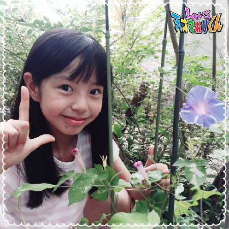
レッツ早寝早起きで夏休みをいっぱい楽しむぞ～！！
投稿者:久保みのり | 投稿時間:18時45分 | カテゴリ：てれび戦士 | 固定リンク
夏が来た！［飯島緋梨］
こんにちは
飯島緋梨です！
いよいよ、夏休み！！
どんな夏を過ごそうかな・・・
宿題は・・・
いつも慌てて夏休み終わりの方で焦ってやっています（ 笑 ）
（ ※良い子はマネしないでね ）
今年の夏休みこそは予定をたてて
中学生らしく早めに終わらせて挑戦したいことがあります！
今年の夏も挑戦してみたいことはズバリ！
キャニオニング！
去年の夏、長野どちゃもん・はくばまるに会いに長野県に行ったとき、
初めてキャニオニングに挑戦しました (^^)
森の中は夏なのに涼しくて、
川の中に自然のすべり台があるなんて初めて知りました (^^)
まずボルダリングの訓練をしてからタッキーと一緒に挑戦しました！
最初、上から見たときは怖かったけど
すべり降りたときは最高に気持ち良かった (^^)
水の中は静かで青くてキレイでずっと浮かんでいたかった～
今年の夏は森の中でキャンプして
キャニオニングツアーに行きたいな (^^)
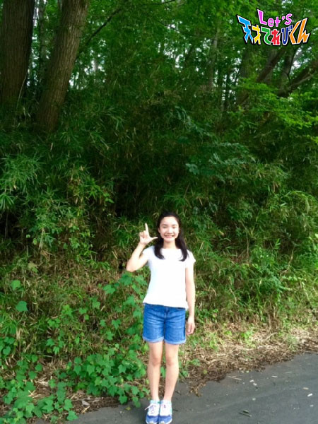
みなさんも暑い夏は熱中症に気をつけて過ごしてくださいね (^^)
Let's 楽しい夏休み！
投稿者:飯島緋梨 | 投稿時間:18時45分 | カテゴリ：てれび戦士 | 固定リンク
夏が来た！［皆川寧々］
みっなさ～ん、
こんばんは、＊寧々＊です (｡・u・｡)/☆
暑い。。。暑い。。。暑い。。。
寧々がアイスだったらとけてしまいそうです。。´д` ;
室内にいても熱中症には気をつけなくては！！
７月になってから気温もぐぅ～んと上がり
どこからかセミの鳴き声が、、、
「 ついに、夏が、ｷﾀ━━━(ﾟ∀ﾟ)━━━！！ 」
って感じがしてきましたね。
今回は、夏に頑張りたいことを、
リストアップしてみました (●・ｕ・●)/
～～Let's 夏に頑張りたい！リスト～～
♪☆ バスケが上手になりたい！！ ☆♪
前のブログにも書きましたが、
去年からミニバスケットボールチームに入っています。
夏休みは試合がたくさんありそうなので、
１試合でも多く勝てるようにいい試合ができるように
毎回の練習を真剣に頑張ります！
♪☆ 平泳ぎができるようになりたい！！ ☆♪
みんなに「 えー！？寧々、水泳できないの！？ 」
とよく言われます笑
全く泳げないのではなく、普通に泳げるレベルです。
夏休みのプールはできるだけたくさん通って、
夏休み中に平泳ぎをマスターできるように頑張ります！
♪☆ 夏休みの宿題を早めに終わらせる！！ ☆♪
去年は、散々でした。。。
最後までやらなくて、母や、おばあちゃんに、
すごく怒られました (*`д´*)
あっ！？ でも何気に一番最後に残していた感想文や作文が
賞をとったり候補に選ばれたりするというキセキがあります笑
今年の夏は、計画的に早め早めに終わるよう頑張ります！
これからが夏本番です！
夏バテしないように、ご飯をたくさん食べて、
しっかり睡眠もとり、塩分＆水分もとってくださいね～！！
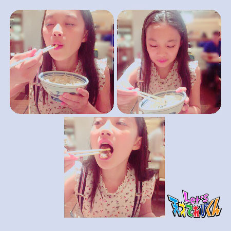
Let's 楽しい夏休み！！！
それでは＊寧々＊でした～
投稿者:皆川寧々 | 投稿時間:18時54分 | カテゴリ：てれび戦士 | 固定リンク
私の好きな『たりないドアー』！［胡内奏芽］
こんにちは！！
胡内です。
この間、てれび戦士の仲間たちと遊びに行ってきました (^з^)-☆
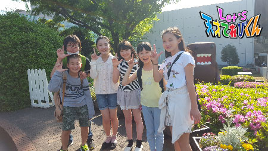
どーもくんの前でパシャリ。
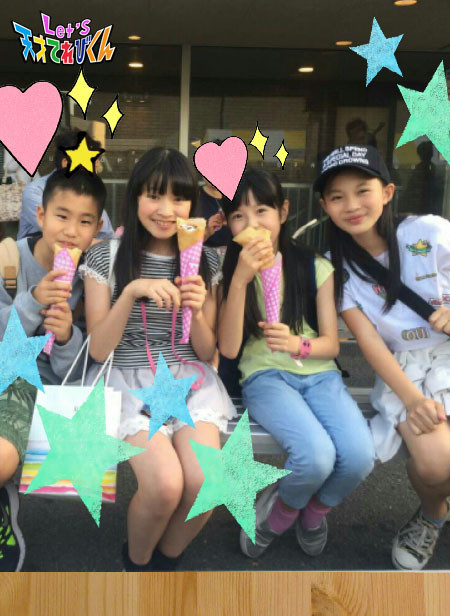
小腹が減ったので、クレープを食べました！！
甘いの大好き！
幸せでした (*^^*)
さて、今回のテーマは「 私の好きな『 たりないドアー 』！」です！！
たりないはなりたいのはじまり。
悲しいはうれしいのスタート。
つかないは行きたいのはじまり。
さみしいは楽しいのブラザー。
ぼくは、このフレーズが大好き！！
つらいことや、悲しいこと、くやしいことは
がんばればもっと良くなることに、つながってる。
逆に楽しいことのあとには勉強が待っている （泣）
でも勉強がんばったあとにはまた、楽しいことが待ってる＼(^-^)／
今は今しかないから楽しむことが大事だよ！
って教えてくれてる感じがして、元気が出る歌詞です！
さて、元気が出てきたところで、
宿題だ！！！
レッツ！！！！！
投稿者:胡内奏芽 | 投稿時間:18時45分 | カテゴリ：てれび戦士 | 固定リンク
私の好きな『たりないドアー』！［原田明莉］
こんにーちは
明莉です！
いっやーー
雨の日は学校行くの大変だからちょっとやだなー。
でも靴がびちょびちょになるのとかちょっと楽しい (^O^)／
んでも部活は外でやるのが好きだからなー
んでも湿度が高い１日も好き (^o^)
よし！
雨が多いときは存分に楽しんで
雨が少ないときも存分に楽しめばいーのだ！！！
それでは本題に入りますねー
今回のテーマは
「 私の好きな『 たりないドアー 』！」
です！
みなさん！
エンディング見てくれていますか？
あれなんか日本っぽい和な感じが入っていて好きだなぁ
ぐるぐる階段とか見るだけで楽しくなっちゃう！！
私は『 たりないドアー 』全部が大好きです！
でもその中でも！
いっちばん好きな『 たりないドアー 』は
【 たりないはなりたいのはじまり 】
【 つかないは行きたいのはじまり 】
この歌詞です！！！
いい歌詞ぃぃぃぃぃ
私なりに理解した感じなんですが
【 たりないはなりたいのはじまり 】というのは
たりないたりないというのは、欲というのかな
そう言えている間はスタート地点にいてゴールを目指せるときなんだ
あきらめるきっかけではなく努力のきっかけ。
と思えました
【 つかないは行きたいのはじまり 】も
上と同じような感じです
なかなかたどり着けないこともあるかもしれないけど
つけないということは自分はいきたいという意識をもっている
まだ前に進めるとき。
と思えました
なんだか背中を押してくれる歌詞で大好きです！
私が好きな『 たりないドアー 』は
【 たりないはなりたいのはじまり 】
【 つかないは行きたいのはじまり 】
です！！！
みなさんも好きな『 たりないドアー 』を見つけてみてください！！！
Let's！！！
投稿者:原田明莉 | 投稿時間:18時45分 | カテゴリ：てれび戦士 | 固定リンク
私の好きな『たりないドアー』！［辻晴仁］
おはこんばんちは！
つじはるとです ^o^
このあいだ、自然公園に、
ホタルを見に行きました。
ホタルは林の奥の方にたくさん光っていて、
時々ぼくたちの方までふわふわと飛んでくることもあって、
見ている人みんなで大こうふんでした。
そして、なんと！なんと！なんと！
ぼくの手にホタルが乗ったんですよ
o(≧▽≦)o
手のひらの上のホタルは小さくて、
ピックヮ～～～ンと、強いけどやさしい光で光っていて、
見ているとなぜかとってもいやされました。
とってもきれいだったしかわいかったし、
うれしかったなあ。
また来年も見に行きたいな！
・・・・・・・・・・・・・
さて、今回のテーマは、
「 私の好きな『 たりないドアー 』！」
ぼくは『 たりないドアー 』
大大大大大！好きです！
はじめて聞いたときは、
『 にっぽんなんばあず 』や、『 めしどきむしゃりずむ 』とは
全くちがうふんいきの曲だったので、
とてもおどろきました。
そして、ソークール！！！て思いました
(￣▽￣)
歌詞もメロディも大好き！
そしてダンスも大好き！です。
とくに、後半の、
♪たりないはなりたいのはじまり～♪
から、
♪おちこんでいるならのぼれるっ！
かも！！♪
までが、
マイナスのこともプラスに変えられる！
て思えて、元気が出てきます。
かも！のところにバーン！て
気持ちをぶつけると、
心もからだもスカッとして気持ちがいいんだ！
そして、ダンスは、【 ビームが出てーる♪ 】
のところがお気に入りです。
ビームがビーーーーと出てくるイメージで、
手と足を前から横に90度、おおき～く
なるべく遠くにグイーンと円をえがくように回すとカッコいいよ！
ちなみに、ぼくは足がしびれちゃったとき、
このあとどうなるのかな？
このビリビリはすぐに引くのかな？？
ひどくなるのかな？？
と思ってわくわくしちゃう。
だいたいは、そのうちビリビリピクピク～てひどくなって、
うわぁー動けない助けて～！てなるんだけど、、、
あれ？？？ 関係ある気がしたんだけど、
これはあまり関係ない話だった、、かも、、
(*^^*) あはは
おしまいにしま～す。。f^_^;)
ビームがでてー♪
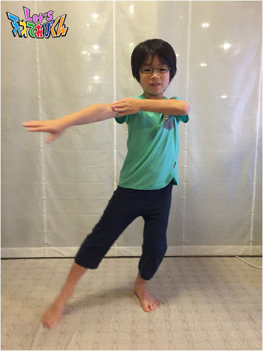
える！ う♪ う♪ う う う♪
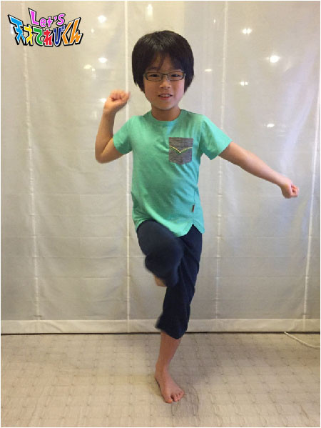
みんなもぜひ歌っておどってみてね！
楽しいよ ^o^
投稿者:辻晴仁 | 投稿時間:18時45分 | カテゴリ：てれび戦士 | 固定リンク
私の好きな『たりないドアー』！［小澤竜心］
こんにちは！竜心です。
６月は学校で、栃木県の日光へ移動教室に行きました♪
日光東照宮を見たり、ハイキングをしたり、
いろんな滝や湖を見たり・・・ (*´∇｀*)
夜は、キャンプファイヤーと肝だめしをしました。
みんなとたくさん遊べて、絆が深まって、
いい思い出になりました (*^o^)／＼(^-^*)
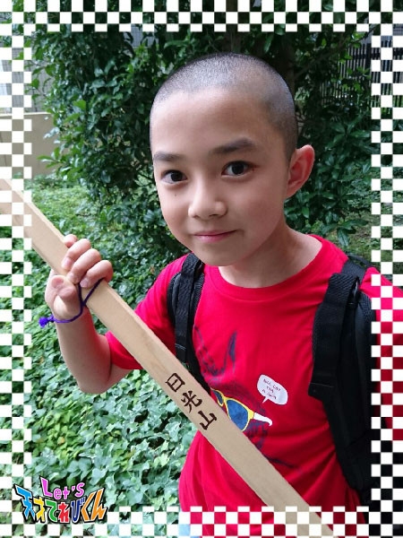
さて、ぼくの好きな『 たりないドアー 』について☆
今回は、特に好きなところ３つをお話します。
まず【 思い出せないコトバがあると 細胞からはビームが出てる 】のところ♪
頭をたたいて『 何だっけ？何だっけ？ 』って考えて、
ぱくぱくコトバをしゃべるところが、
にわとりみたいでカワイイです。
コトバを思い出すときに、
細胞からビームが出るなんてすごい！！
力こぶを作ってからビームを表しているところは、
戦ってるみたいでカッコいいです。
次は【 おなかがすいた のばしてつかもうドアノブ 】のところ♪♪
おなかがすいたときに開けるドアーってどこかな？
きっと・・・冷蔵庫のドアーを開けて、
お菓子とかをこっそり食べちゃうんだ！
って、想像しながら歌ってます。
最後は【 おちこんでいるなら のぼれるかも 】のところ♪♪♪
おちこんでいるときこそ、前をむけば、
上にのぼれるんだー！！
って思ったら、
どんなにたいへんなときでも、元気が出ます。
『 たりないドアー 』は、ぼくに、
元気と勇気と、やる気をくれる歌です d=(^o^)=b
投稿者:小澤竜心 | 投稿時間:18時45分 | カテゴリ：てれび戦士 | 固定リンク
私の好きな『たりないドアー』！［黒川桃花］
こんにちは！
黒川桃花です！
今回のお題は、
「 私の好きな『 たりないドアー 』！」です。
エンディング曲の『 たりないドアー 』
ドアンドアン・・・コツンコツン・・・
↑ ここは歌うとき、リズムをつかむのが少し難しいですね。
でも、かっこよくてのりのりで大好きです！！
私の好きなダンスのポイントは、
クルクル回ってバーンってやるところです！
わかりますか？
トゥルルルルルルル♪たりなーいはなりた―いのはじまり♪のところです！
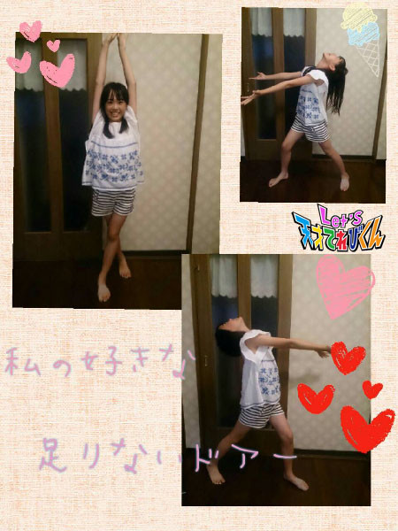
わかりますかねー？
なんで好きなのかというと、スカー！っとするからです！
クルクルときれいにまわって
バーン！！ってやると、とってもきもちいいです！
皆さんもクルクルバーン！ってやってみて下さい！
とっても楽しいですよ！ (^_^)/
投稿者:黒川桃花 | 投稿時間:18時54分 | カテゴリ：てれび戦士 | 固定リンク
私の好きな『たりないドアー』！［飯島緋梨］
こんにちは！
飯島緋梨です
もう７月ですね～！
もうすぐ夏休み (^^)
夏休みは何して遊ぼうかな～
さてさて。
今回のお題は・・・
「 私の好きな『 たりないドアー 』！」
４月から新しくなったエンディング曲
『 たりないドアー 』の中で
おすすめの歌詞や緋梨の好きなダンスの部分を紹介したいと思います (^o^)
緋梨のおすすめの歌詞やダンスは・・・
♪思い出せないコトバがあると 細胞からはビームが出てる♪の部分です！
思い出せない言葉ってあるあるですよね (^^)
細胞からビームを出したい (⌒▽⌒)
声を出すようなポーズで、
口の前に少し開いた手を出すんです！
ここでちょっとダンスポイント！
手を前に出すときに上半身をうしろに引くんです！
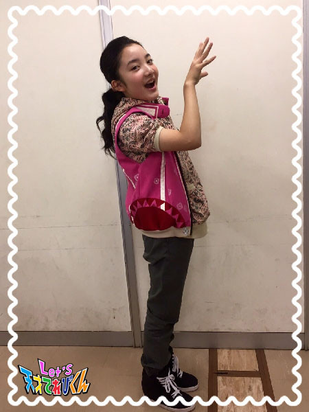
こんな風に・・・
口と手を離す！
その部分を注意しながらやると
かっこよく！踊ることができます！
ぜひやってみてくださいね ^o^
でもでも！
何よりも１番大切なことがあります！
それは・・・笑顔で歌って踊ること！
難しくても笑顔で踊れば大丈夫！
もちろん最後の“ Let's ”も笑顔でかっこよく決めポーズ！
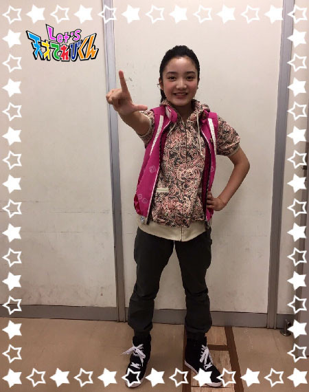
みなさんの好きな『 たりないドアー 』は何ですか？？
Let's 笑顔でダンス！
投稿者:飯島緋梨 | 投稿時間:18時45分 | カテゴリ：てれび戦士 | 固定リンク
私の好きな『たりないドアー』！［柿澤仁誠］
こんにちは (^_^)
仁誠です。
今回は「 Let's天才てれびくん 」のエンディングテーマです (^O^)／
「 私の好きな『 たりないドアー 』！」ということで、
ぼくのお気に入りの歌詞とふりつけは、
【 悲しいはうれしいのスタート♪ 】というところです(^○^)/
この部分は、手をたくさん動かさないといけなくて、
むずかしいダンスなんですが、
上手にできると気持ちいい部分でもあります (^o^)v
よーいドン！と、スタートするときのポーズをしているので、
注目してみてください。
ぼくは運動会の徒競走でスタートを待ってるときが
いちばんきんちょうします。
ドキドキ、、、、(＠o＠)
不安だけどやるしかないと考えたり、
周りのおうえんの声も聞こえてるけど集中してるし、
ふしぎな時間です。
そんなときを思い出して、スタートポーズをしています。
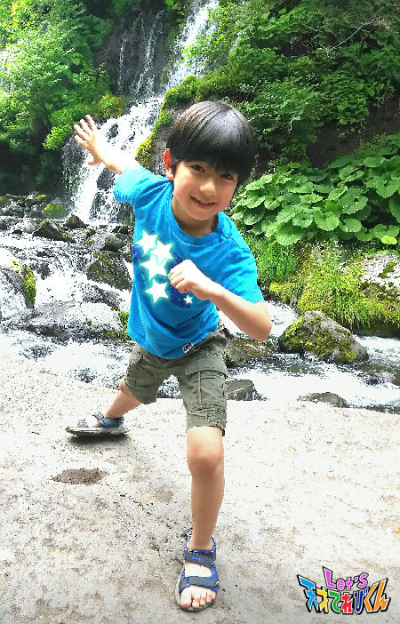
ぼくは最後の決めポーズも、スタートみたいなポーズにしました！
うれしいのスタート！って思うと元気が出るし
笑顔になれるポーズです！
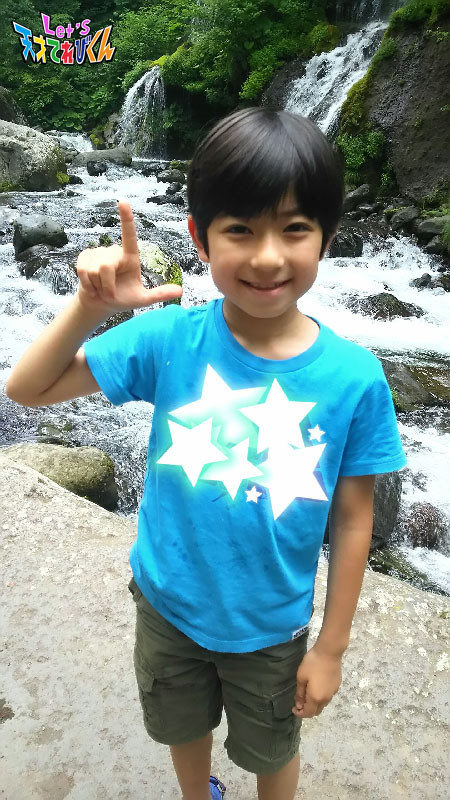
投稿者:柿澤仁誠 | 投稿時間:18時45分 | カテゴリ：てれび戦士 | 固定リンク
私の好きな『たりないドアー』！［林武尊］
こんにちは、林武尊です。
今回のお題は「 私の好きな『 たりないドアー 』！」
僕の好きなポーズはこれです。
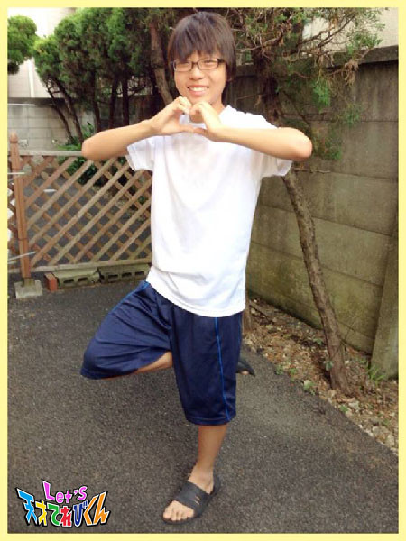
最初は、体の前でハートを作って割るポーズ。
これはダンスの中で僕がいちばん忘れてしまうポーズなんです。
僕はダンスをするのは好きだけど、
いざやってみると自信をなくしてしまいます・・・
それは、『 たりないドアー 』のときもでした。
でも、そのポーズができるようになると、
ほかのところも踊れるようになって失敗しなくなりました。
だからこの振りは、
『 たりないドアー 』を最初から最後まで踊れるようになったキッカケでもあるのです。
だから僕はこのハートを割るポーズがとても好きです。
もうひとつは最後のドアンドアンの振り。
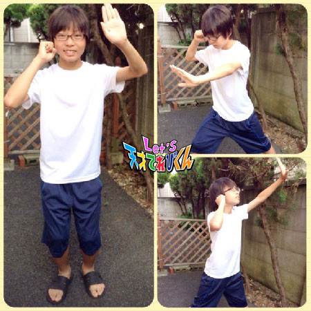
ここはみんながいろんな扉をノックしているから好きです！！
例えば家のドアや学校のドアなど、自分の想像した自由なドアをノックしています。
僕の場合、１回目はトイレ、２回目は学校、３回目は未来です。
未来は、自分の将来に向かってノックしています。
未来の僕は何をしているのか、彼女はいるのか、
お金はかせげているかなどなど、いろんな期待があります (o^^o)
みなさんもドアの向こうに何があるか想像して踊ると
とっても楽しいですよ～
投稿者:林武尊 | 投稿時間:18時45分 | カテゴリ：てれび戦士 | 固定リンク
私の好きな『たりないドアー』！［皆川寧々］
みっなさ～ん、
こんばんは、＊寧々＊です(｡・u・｡)/☆
この前、ミニバスケットボールの大会がありました！
前半戦で20点差もひらいていたのに、
後半戦の途中で同点に追いつき、
なんと！
逆転勝利を決め、勝ちました！！
トーナメント戦だったので、勝ち上がれたうれしさのあまり
感極まって涙、涙してしまいました (*pωq*) 泣
次の試合もがんばるぞぉ！！
夏休みは練習試合や大会もたくさんあります。
今年でミニバスは最後になるので、
１試合１試合を大切に、ひとつでも多くシュートを決め、
勝ち試合で終われるように
日々の練習をがんばりたいと思ってます (｡・n・｡)ｑ
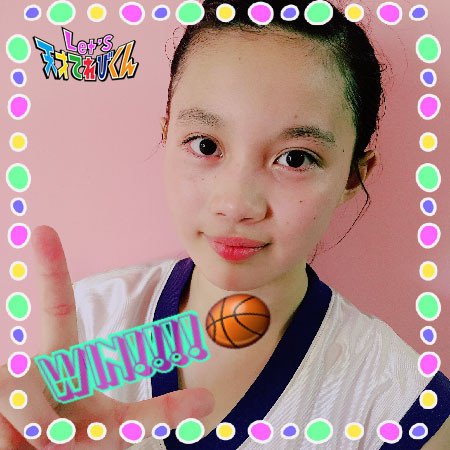
さてさて、本題に入りま～す！
「 私の好きな『 たりないドアー 』！」
～＊～＊～ 踊り編 ～＊～＊～
歌いながら踊るのは楽しいから、
ホントは１曲ぜんぶスキなんですが・・・
特にスキなとこは、
♪と、び、ら、よ、扉～
のとこです！！！
人差し指で大きな目に見えない扉をつくるところは、
『 この扉の向こうには何があるのかなぁ？ 』
と想像しながら、できるだけ大きな扉を作るところがワクワクしてスキです！！
上手に踊ろうと思うとリズムも速く
頭の中がこんがらがって爆発しそうになります (・д・; )笑
間違ってもいいから楽しみながら、
動きを大きく、メリハリをつけて踊ると
すごくかっこよく見えると思います！笑
～＊～＊～ うた編 ～＊～＊～
このうたは１曲ぜんぶスキなんですが・・・
♪たりないは なりたいのはじまり
のとこから
♪さみしいは楽しいのブラザー
のところがややこしすぎるから大スキです
♪たりないは なりたいのはじまり
♪悲しいは うれしいのスタート
♪つかないは 行きたいのはじまり
♪さみしいは 楽しいのブラザー
これ韻 （ いん ）を踏んでますねぇ笑
ぜひ静岡どちゃもん・ぎゅたあくにラップしてもらいたいなぁ～
２番とか３番とかあったらどんな歌詞になるのか
楽しみですね (｡・u・｡)
みなさんも考えてみて今度聞かせてください！
それでは＊寧々＊でした～
投稿者:皆川寧々 | 投稿時間:18時45分 | カテゴリ：てれび戦士 | 固定リンク
私の好きな『たりないドアー』！［瀧澤翼］
こんにちは！
テストが終わって、やっと気持ちが落ち着いた瀧澤翼です！
さぁ、今回のテーマは「 私の好きな『 たりないドアー 』！」！
『 たりないドアー 』というのは、番組の最後に流れるエンディング曲です。
そのエンディング曲の好きな振り付けを紹介します！
それは、歌詞の【 細胞からはビームが出てる♪ 】のところの
“ ビーム ”の振り付けが気に入ってます！
ちなみにこんな感じ！！
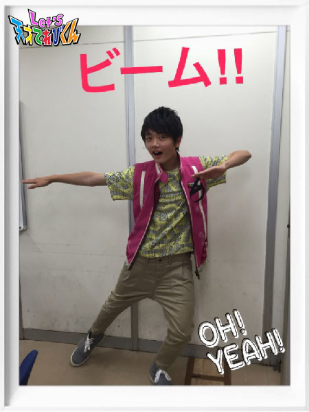
腕を伸ばしながらビームを撃つイメージでカッコイイです！！
あと、サビの歌詞で
【 たりないは なりたいのはじまり 】という歌詞があるのですが、
すごく奥が深いなぁ～っと思いました。
落ち込んだときにこの歌詞を思い出すと、なんか元気づけられます p(^_^)q
実際テスト勉強で疲れたときに
この歌詞を思い出しました！
結果は・・・気にしない (･_･;
まぁ、とにかく『 たりないドアー 』って
改めていい歌だと実感しました！
それではLet's たりないドアー！！
投稿者:瀧澤翼 | 投稿時間:18時54分 | カテゴリ：てれび戦士 | 固定リンク
私の好きな『たりないドアー』！［久保みのり］
みなさん、こんにちは (^o^)／
みのりです～
暑い日が続いていますね。
わたしはおうちで作った梅ジュースを毎日飲んでいます。
あまずっぱくて、さわやかな味でとってもおいしいんです！
でもおいしいだけでなく、梅は夏バテをふせいでくれるんだって！！
もうすぐ楽しい夏休み ^ ^
梅ジュースを飲んで暑い夏をのりきるぞ！
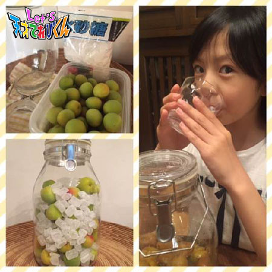
＊.｡.:*・ﾟ＊.｡.:*・ﾟ＊.｡.:*・ﾟ＊.｡.:*・ﾟ＊.｡.:
４月から新しくなったエンディングテーマ、
『 たりないドアー 』
みなさんも覚えてくれましたか？
イントロが流れだすだけで楽しくなっちゃいます ^ ^ でも、
「 あー、明日の天てれ早くみたーーい 」ってなる曲です♪
わたしはダンスがあまりとくいじゃないので、
キレキレダンスの練習は大変で
１回おどるだけでもはーはー、、、毎日きん肉痛でした ^_^;
そんなわたしがオススメするダンスポイント！！！（ わたしがうつっているところへん ）
その（１）
かゆいところに手がとどかない そんなばあいにワクワクしてる♪
→ おしりフリフリ（ ノリノリで～ ）
その（２）
おなかがすいた のばしてつかもうドアノブ♪
→ おしりフリフリ（ はずかしがらないで～ ）
その（３）
たりないは なりたいのはじまり♪
→ 思いっきりせなかを反って（ いたくならないようにね～ ）
その（４）
おちこんでいるなら のぼれるかも♪
→ 「 かも 」のところは、最後の力をふりしぼって
手を高くのばして（ ほんのいっしゅん、わたしの笑顔にも注目してください～ ）
その（５）
ドアン×５ コツン×５♪
→ 最後の１回は正面向いて。さあ決めポーズはかっこよく！！
どうですか？ぜんぜんアドバイスになってないかな笑
でも、大丈夫！
ジャカジャカジャカジャカ♪のリズムに乗って、いっしょに、
Let's ダンス たりないドアー (*^^)o∀*∀o(^^*)♪
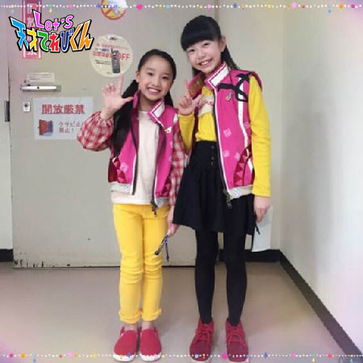
投稿者:久保みのり | 投稿時間:18時45分 | カテゴリ：てれび戦士 | 固定リンク
私の好きな『たりないドアー』！［桐畑カレン］
こんにちは。
カレンです (*^^*)
♪トゥートゥートゥートゥトゥトゥ
トゥートゥートゥートゥトゥトゥ
トゥトゥートゥルットゥ ドゥー♪
イントロからかっこいい。
『 たりないドアー 』
ダンスもかっこいい。
『 たりないドアー 』
かっこよくて、思わず口ずさんじゃう♪ (^^)♪
そんな『 たりないドアー 』で特に好きなフレーズがあります。
それがココ！
♪おちこんでいるなら のぼれるかも♪
おちこんでしまったら、もう下はないんだから落ちる心配なし！
あとはがんばって上にのぼるだけじゃん！イエーイ！
って思えるプラス思考なところが好きです。
あと、「 かも～ 」のところが
歌いかたによって「 カモ～ン 」と聞こえるから、
「 おちこんでないで、のぼって来てよー。早く来て来て！ 」
と言われてるみたいで好きです。
うん！いい (*´∀｀)
続きまして、ダンスで好きなところはココ！
♪細胞からはビームが出てる♪
うでと足をしっかりまっすぐ伸ばして踊ると、
ビームが出ているように見えて、かっこいいです。
ぜひ、うでと足をしっかり伸ばして、ビームを出してください (^^)
ハッ (゜ロ゜)
私がダンスのアドバイスをしてる・・・
恥ずかしい (/o＼)
とにかく！！楽しく歌っておどれたらいいと思います (^^)/
最後の決めポーズは、好きなポーズで決めましょ～う♪
Let's たりないドアー！
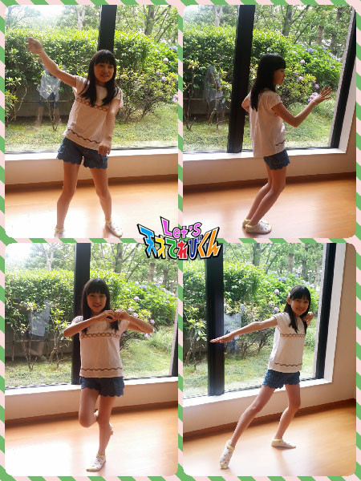
投稿者:桐畑カレン | 投稿時間:18時45分 | カテゴリ：てれび戦士 | 固定リンク
私の好きな『たりないドアー』！［稲垣芽生］
こんにちは～
４年生になってクラブが始まり
料理クラブになりましたっ！
大人気のクラブなので
じゃんけんで勝って入れたんだよぉ～
今度作るのはなんとっ！パフェェェェェ
楽しみわくわくっ
４年生も楽しんでおりますっ！
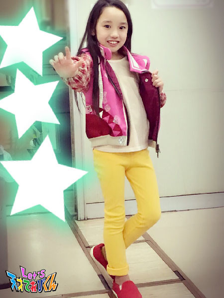
今回のお題「 私の好きな『 たりないドアー 』！」
初めて聞くまで、それはもうっわくわくでしたっ。
聞いてみると、すごく速くて、歌とかダンスとかできるかなぁ～と・・・
できたときはうれしかったなぁ～
すべてが初めてのことばかりで、一生けん命、練習しました。
もっともっとうまく踊れるようにがんばらなくっちゃ！
がんばるぞー
全部大好きだけど特に
【 ムズムズしてる～♪ 】のところから【 胸につかえた～ 】のところの
踊りが大好きです。
歌がないときのあの踊りが、
ちょっと難しくてリズム感があって一番好きです。
最後のポーズは自分たちで決めました。
みなさんも自分の好きなポーズをとってくださいねっ。
みなさんの『 たりないドアー 』の好きなところも聞きたいです。
どこかなぁ～。
投稿者:稲垣芽生 | 投稿時間:18時45分 | カテゴリ：てれび戦士 | 固定リンク
大人になれば［辻晴仁］
おはこんばんちは～♪
つじはるとです (*^^*)
今回のテーマは、
「 大人になれば 」ですね！
大人のイメージってどんなだろう？？
ぼくのまわりにはいろんな大人がいます。
やさしい大人、きびしい大人、
テンション高くてはじけてる大人、
しずかな大人、まじめな大人、
ダジャレを言ったりしておもしろい大人、、、
ぼくはやさしい大人になりたいな～
こまっている人がいたらすぐにぱっと手を出して助けられるような、
そんなやさしい大人になりたいな。
あと、大人になったらやりたいことは、
自分ではたらいてお金をかせいでみたいな。
まずはコンビニのアルバイトからはじめて、
ハンバーガー屋さんや、電気屋さんの店員や、
いろいろな仕事を試してみたい♪
でも、最終的には、
ぼくは虫博士になりたいんだな o(^▽^)o
ぼくが会ったことのある虫博士は、
見た目はふつうのおじさんで、
けど、みんな虫についてとくべつ物知りで、
質問するとていねいにたくさんたくさん教えてくれる、ステキな大人たちでした。
そんな虫博士にぼくもなりたいな～～
↓ こういうことをしてるときが１番幸せ～
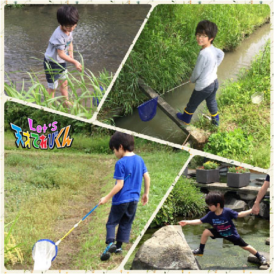
この間、近所の公園のクヌギの木で見つけた
コクワガタだよ♪
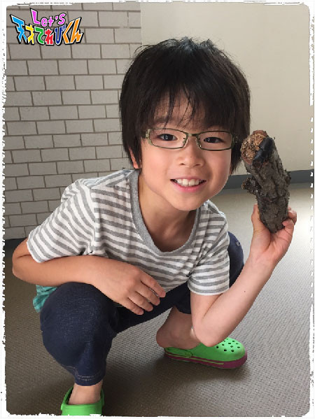
では、またね (^o^)/
投稿者:辻晴仁 | 投稿時間:18時45分 | カテゴリ：てれび戦士 | 固定リンク
ページの一番上へ▲